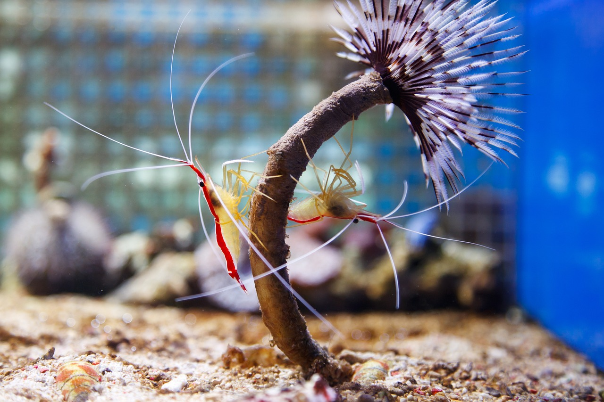

Välkommen till Saltafisken!
Din lokala fiskexpert
Vi är ett ledande företag inom import och försäljning av exotiska fiskar, koraller och ryggradslösa djur (invertebrater) för akvarieentusiaster.Exotiska fiskar

Utforska vårt breda utbud av fiskar från hela världen, från färgsprakande Chromis viridis till eleganta Yellow Tangs.
Koraller

Vi erbjuder både LPS och SPS som tillför liv och färg till varje akvarium. Våra koraller importeras från ansvarsfulla källor för att säkerställa en hållbar framtid för revmiljöer.
Invertebrater (Inverts)
Skapa en komplett undervattensmiljö med våra snäckor, räkor och sjöstjärnor. Dessa viktiga medarbetare håller ditt akvarium rent och balanserat.
Nyheter!
Klicka på rubriken för mer info.